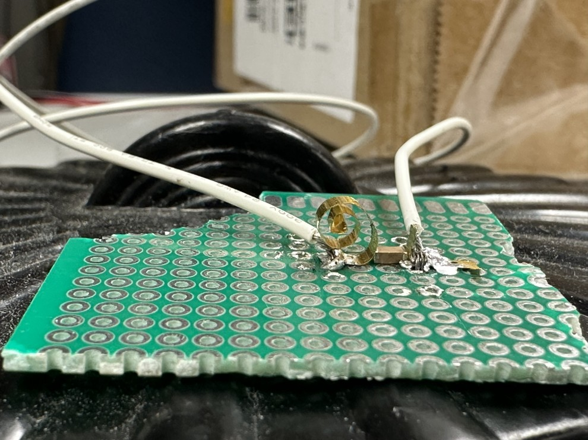
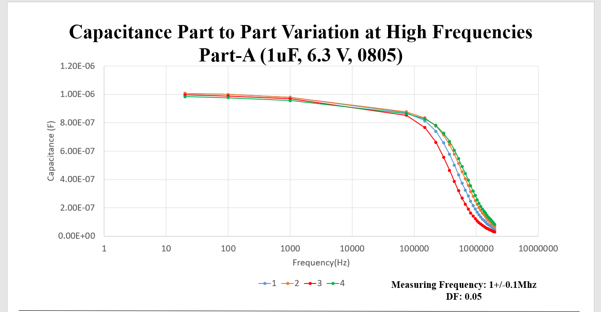

Project Overview
Prepared a project proposal to evaluate MLCCs from multiple vendors and case sizes to support parts selection in ripple‑current applications for the sponsor. Built a solderless, high‑temperature test fixture to accelerate measurements across a wide frequency range and eliminate time‑consuming solder operations.
Rapid Solderless Test Fixture
- High‑temperature capable, designed for rapid MLCC swaps—no soldering required.
- Stable contact geometry for reliable measurements across temperature and frequency.
- Improved throughput and repeatability for screening multiple vendors/case sizes.
Measurement Campaign
- Potentiostatic characterization at three temperatures.
- Measured Capacitance (C), Dissipation Factor (DF) vs. frequency, and Insulation Resistance (IR).
- Electrochemical Impedance Spectroscopy (EIS) / galvanostat measurements to analyze impedance and phase angle over frequency.
Analysis Methods
- Frequency‑response evaluation of C, DF, IR, and impedance/phase trends vs. vendor and case size.
- Comparison across the three temperature setpoints to capture thermal dependencies.
- Structured dataset for downstream parts selection and reliability‑oriented screening.
Study Factors
- Vendor × Case size
- Temperature (T₁, T₂, T₃)
- Frequency sweep
Tools & Techniques
Solderless high‑T fixture, Impedance Analyzer (EIS), Galvanostat, LCR Meter, Thermal Chamber
Deliverables & Impact
- Measurement dataset spanning vendors, sizes, temperatures, and frequency.
- Time savings and efficiency from solderless workflow.
- Actionable selection guidance for ripple‑current applications.
Test Matrix
| Vendor | Case | Temp | Freq |
|---|---|---|---|
| A | 0603 | 25/75/115 °C | 100 → 1 MHz |
| B | 0805 | 25/75/115 °C | 100 → 1 MHz |
| C | 1206 | 25/75/115 °C | 100 → 1 MHz |
High temperature solderless custom test fixture has enabled the test conditions.
Project Gallery

Solderless high‑T fixture

Frequency response example
Thermal chamber setup